采集介质组成、浓度、风量、温度、压力、回收目标和排放指标。
R&D Innovation
科研创新
围绕工艺研发、流程设计、校企合作、实验平台和专利成果，形成可从实验验证走向工业落地的技术体系。
Technical Team
技术团队建设
公司持续引进专业技术人才，高级工程师及教授级专家占比超过60%，核心骨干平均行业经验超过15年，覆盖工艺设计、设备研发、模拟仿真和自动化控制等专业方向。
团队中既有国内较早从事精馏分离、活性炭吸附和尾气回收的资深人员，也有长期参与工程现场调试与运行优化的项目骨干。

Process Design
流程设计方法
通过流程模拟与物性分析，判断分离路线、能量耦合和设备边界。
利用中小试平台进行吸附、精馏、萃取、冷凝和蒸发等环节验证。
将实验数据转化为设备参数、控制逻辑和安全配置。
结合运行反馈优化能耗、回收率、稳定性和维护便利性。
University Cooperation
校企合作与研发方向
围绕高难度溶剂分离、复杂尾气治理和节能过程集成开展联合研发。
共享实验条件、数据模型和工程化经验，提高方案验证效率。
通过项目化训练培养具备化工工艺、设备与控制综合能力的工程人才。
R&D Infrastructure
研发基础设施


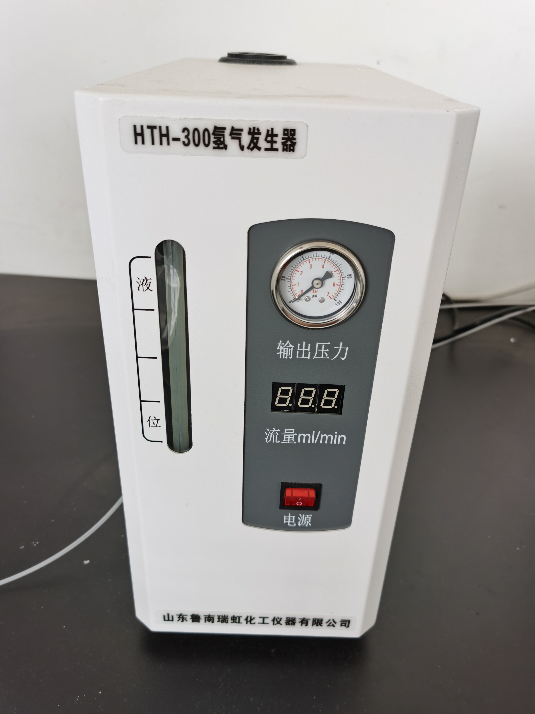
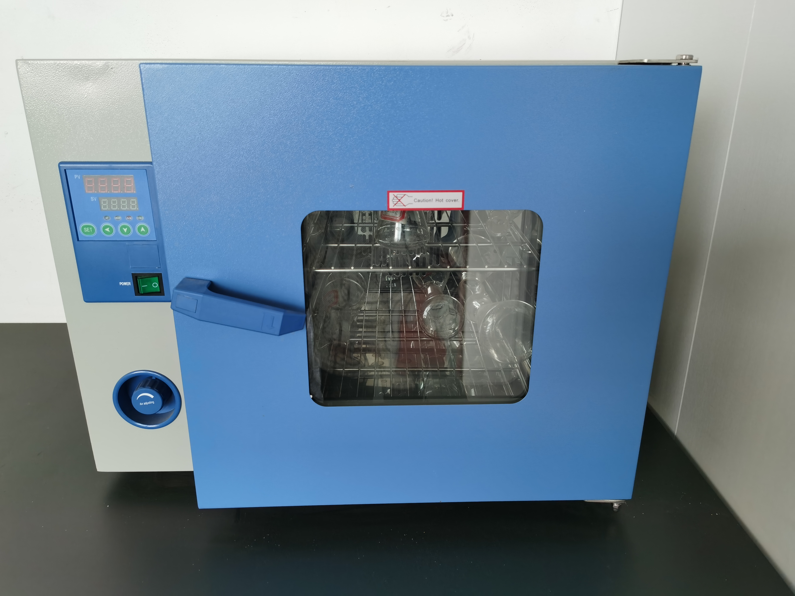
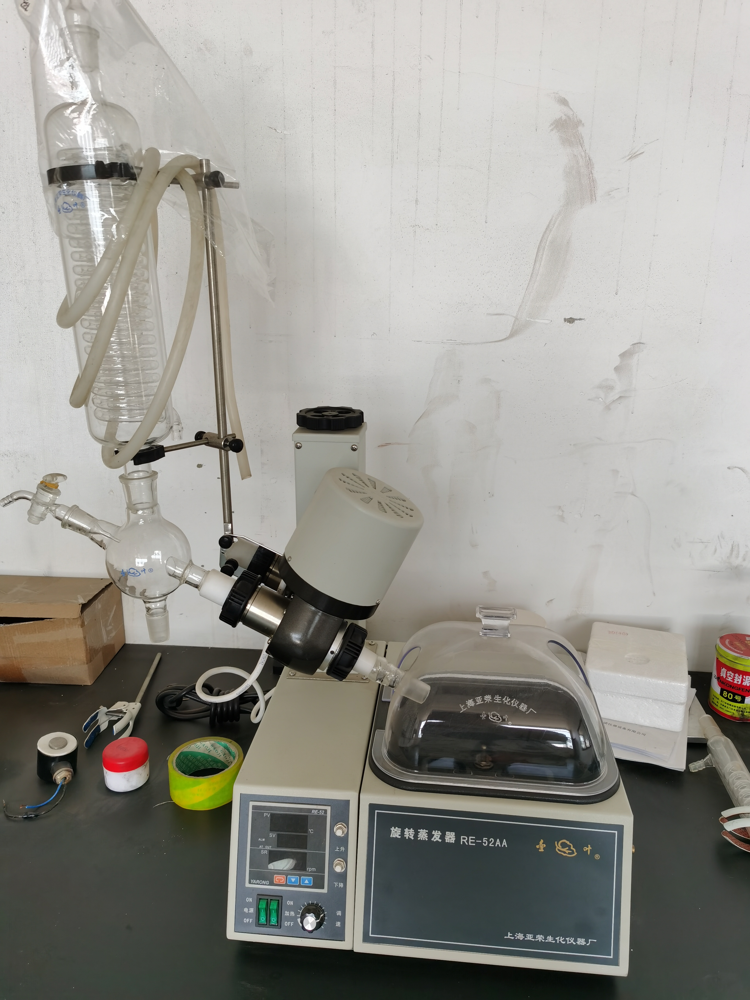
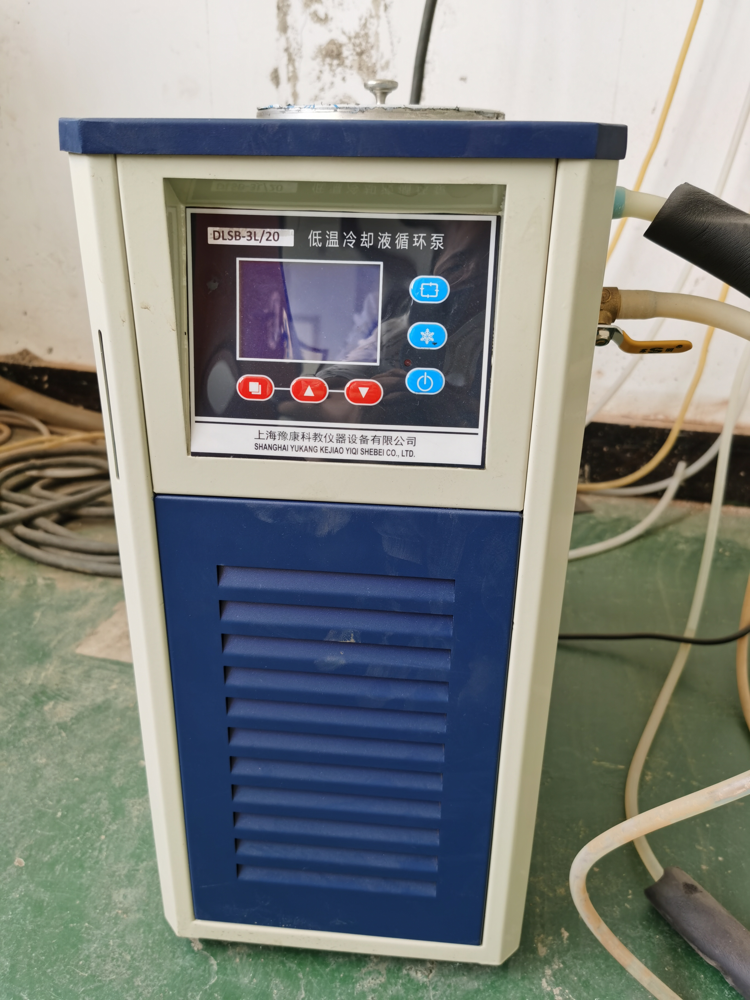


Patents
研发成果展示


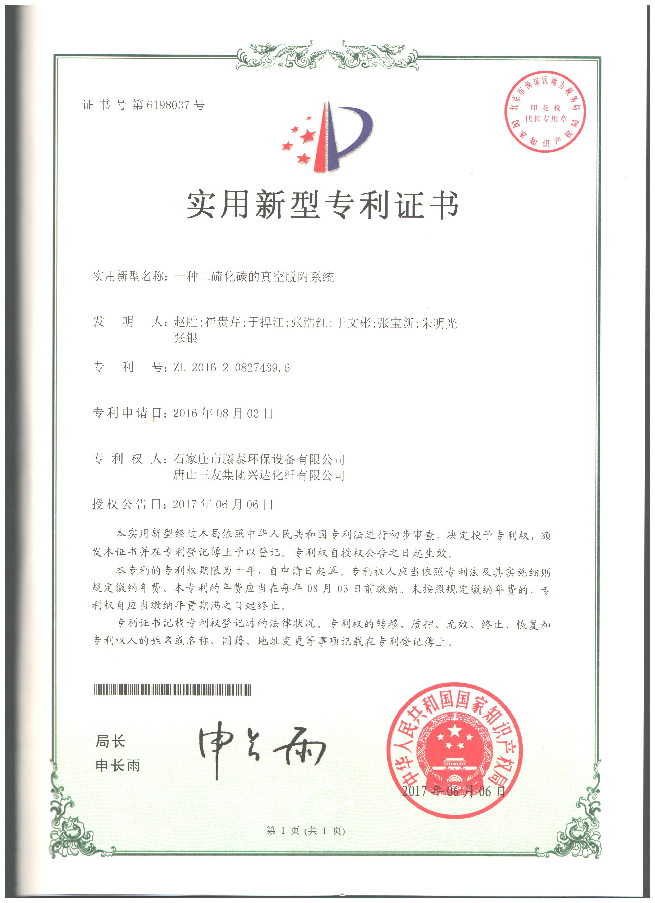
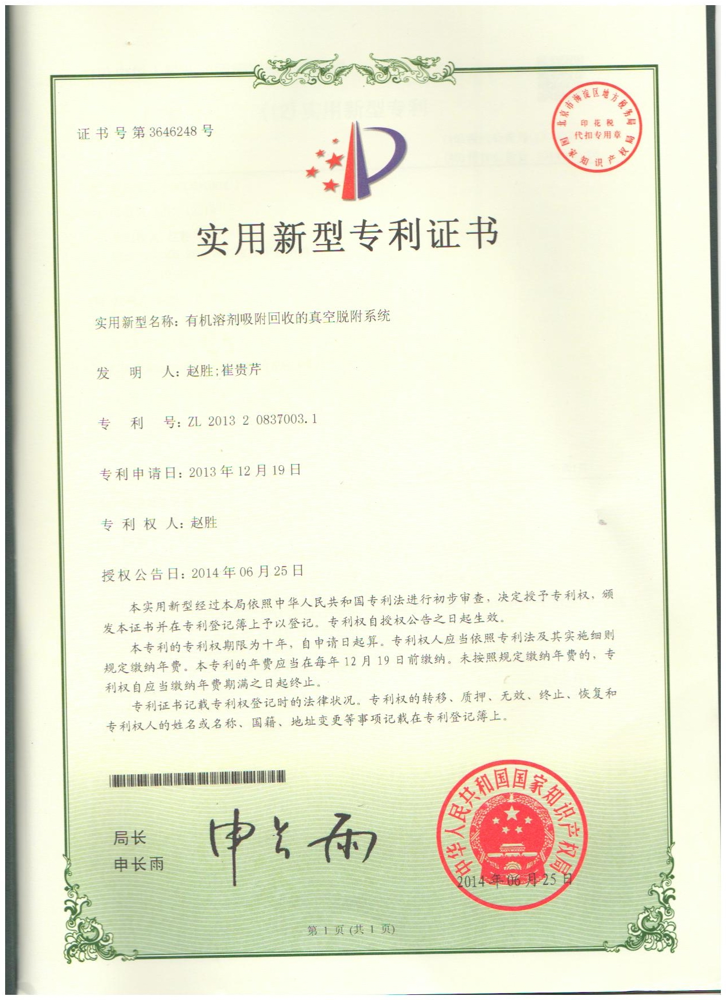
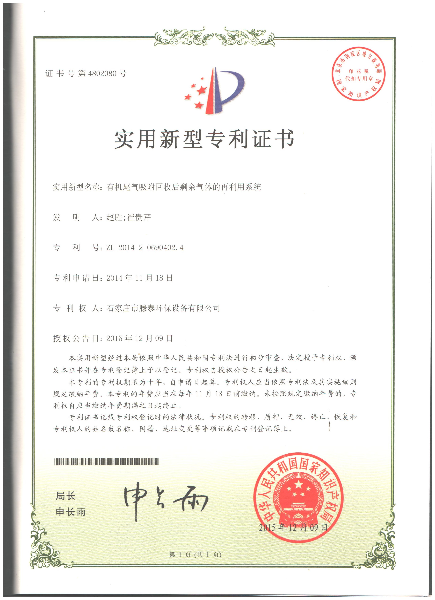
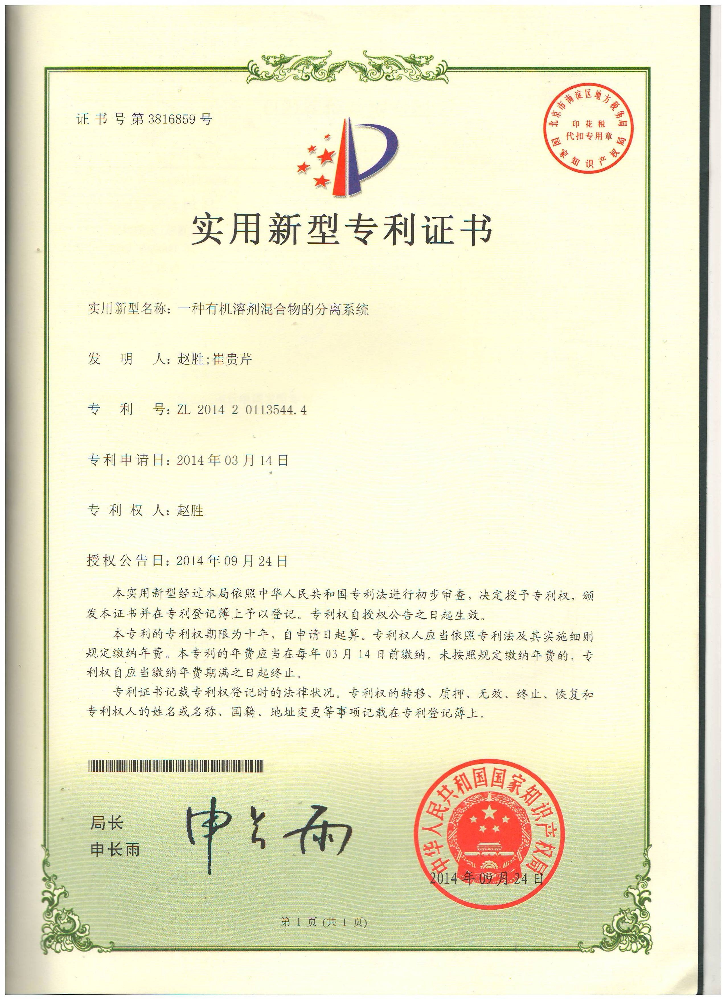
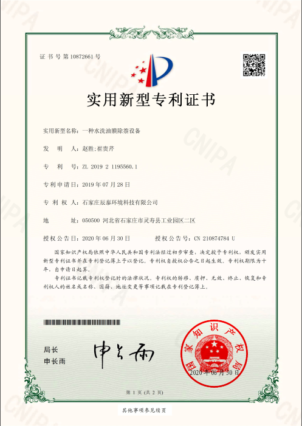
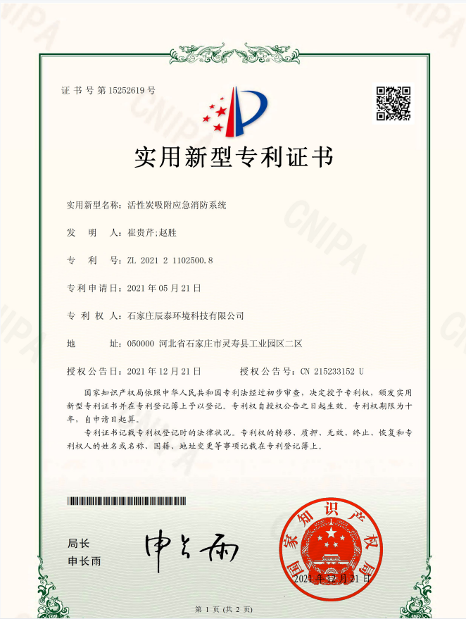

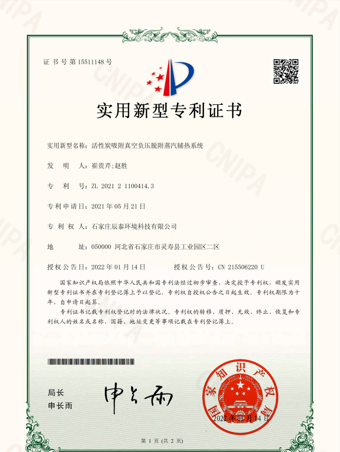
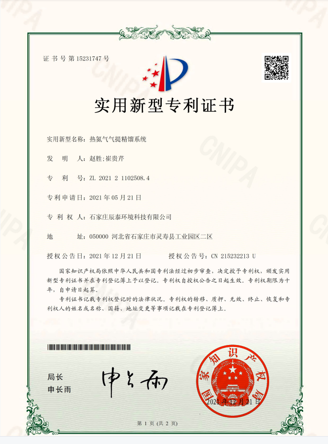
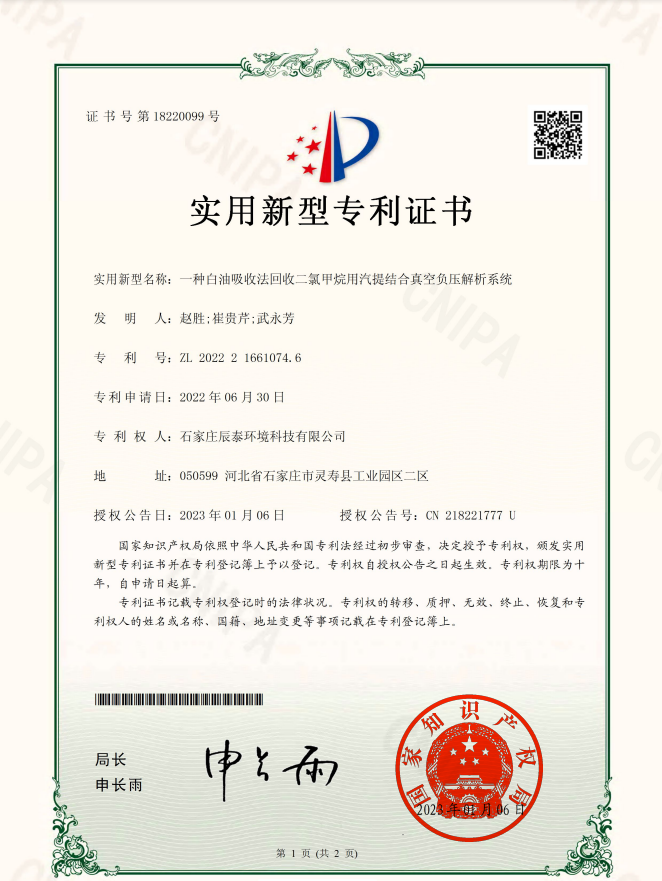
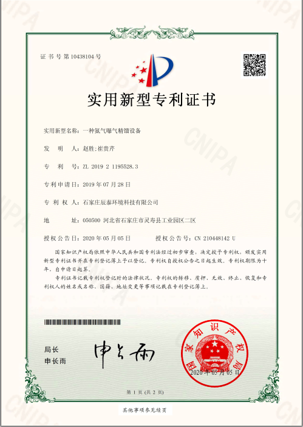
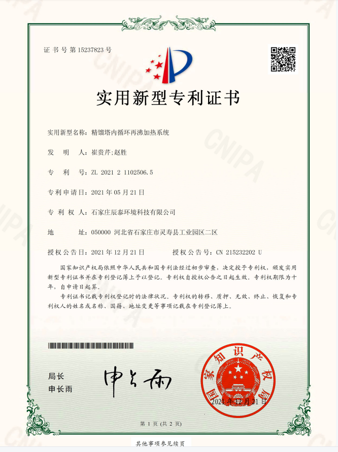
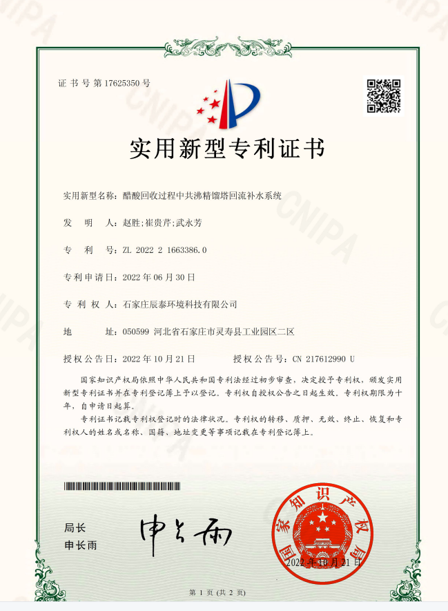